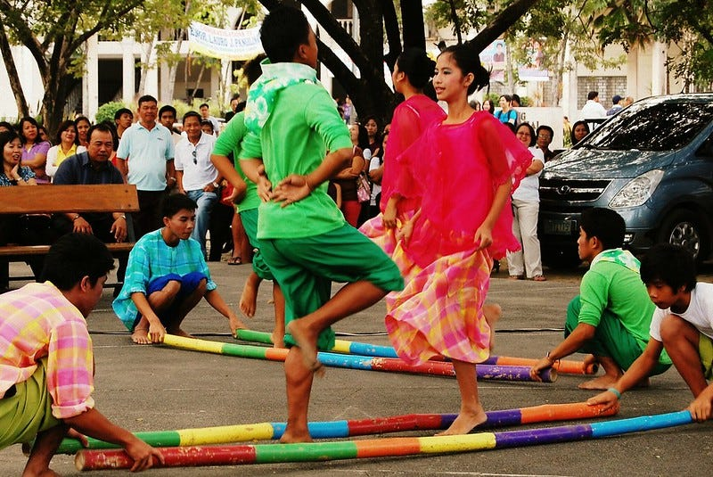
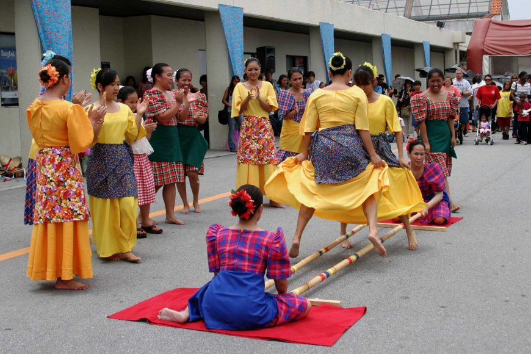
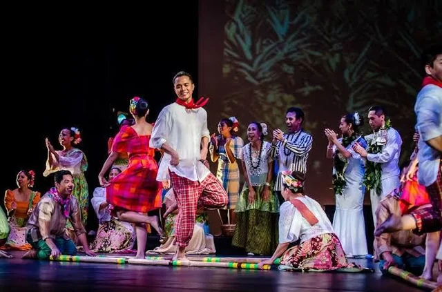
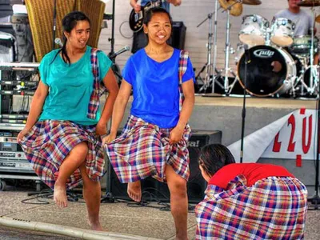
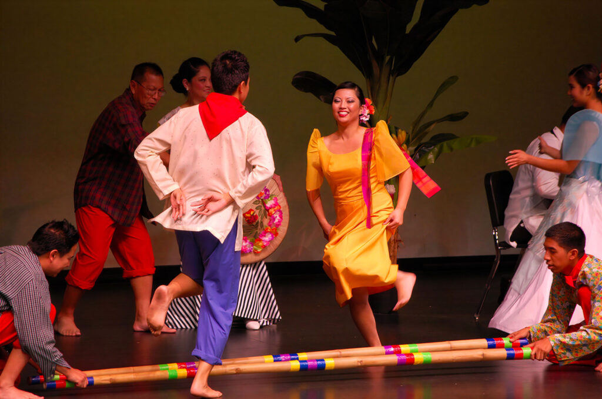

Tinikling is a traditional Filipino folk dance that became popular in the US and Canada because of its unique style. In this dance, two people move long bamboo poles on the ground in a steady rhythm, opening and closing them. The dancer in the middle must move quickly to avoid getting caught between the poles. Many modern variations of the dance continue to be created today.
“Tinikling” means “to move like a tikling bird.” The tikling is a bird found in the Visayas, known for its quick steps and ability to avoid traps. The dance originated in Leyte and was inspired by the light, quick movements of the bird. A common story says that during the Spanish period, workers who were slow were punished by making them stand between bamboo poles. To avoid being hit, they jumped—similar to the dance steps.
In 1998, during the NBA lockout, Kobe Bryant visited the Philippines for an Adidas event. At a welcome dinner at the Manila Peninsula Hotel, he wore a Barong Tagalog and performed the Tinikling dance. Despite being new to the steps, he quickly learned and kept up even as the rhythm grew faster.